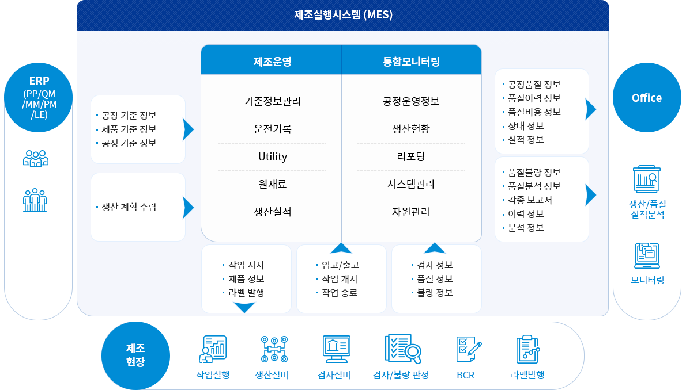

Smart Factory MES
엠투엠글로벌의 뛰어난 기술역량과 다양한 산업 경험을 기반으로 현장 설비부터 통합관제 시스템 구축, 실시간 데이터 수집/가공 및 분석까지 최적화된 스마트팩토리 서비스를 제시합니다.
M2M-MES 도입 필요성
현장분석 제조현장 어려움
- 생산계획의 제조현장 반영 확인 및 분석
- 원재료의 재고 및 조달 현황 확인 및 분석
- 제조현장의 제조실적 실시간 확인 및 분석
- 제조현장에서 발생하는 품질불량 및 분석
- 생산계획/원재료현황/제조실적/품질불량으로
인한 생산계획 변경 및 재 적용
시스템도입 MES 솔루션 도입
- 생산계획
- 생산실적
- 원재료
- 운전현황
- 품질현황
-
01
실시간 데이터 공유제조경쟁력 강화
-
02
제조활동 모니터링글로벌 품질역량
-
03
통합 분석레포팅고객만족
M2M-MES 특장점
-
업무 생산성 증가
정확한 생산 데이터를 기반으로 하여 원료 및 재고 상황을 확인하고 그에 맞는 업무 생산을 통해 생산성이 증가 합니다.
-
합리적인 비용절감
스마트화된 MES시스템 도입으로 인하여 생산성과 품질 향상으로 매출증대를 기대해볼 수 있습니다.
-
생산설비의 효율적인 운영
자원의 상세 이력 및 기반 설비 현황을 Realtime으로 제공하기 때문에 설비의 오작동등을 바로 대응이 가능하여 설비의 효율적 운영이 가능합니다.
-
현장 사고 발생건수 절감
실시간 현장 사고 모니터링을 통해 긴급상황을 예방하고 통제가 가능하여 현장에서 발생하는 사고를 예방할 수 있습니다.
-
편리한 데이터 분석 및 문서 관리
까다로운 업무 공정을 데이터 분석하여 생산성증대와 오차범위를 줄여 재고관리 및 문서 관리가 더욱 편해집니다.
M2M-MES 구성도
